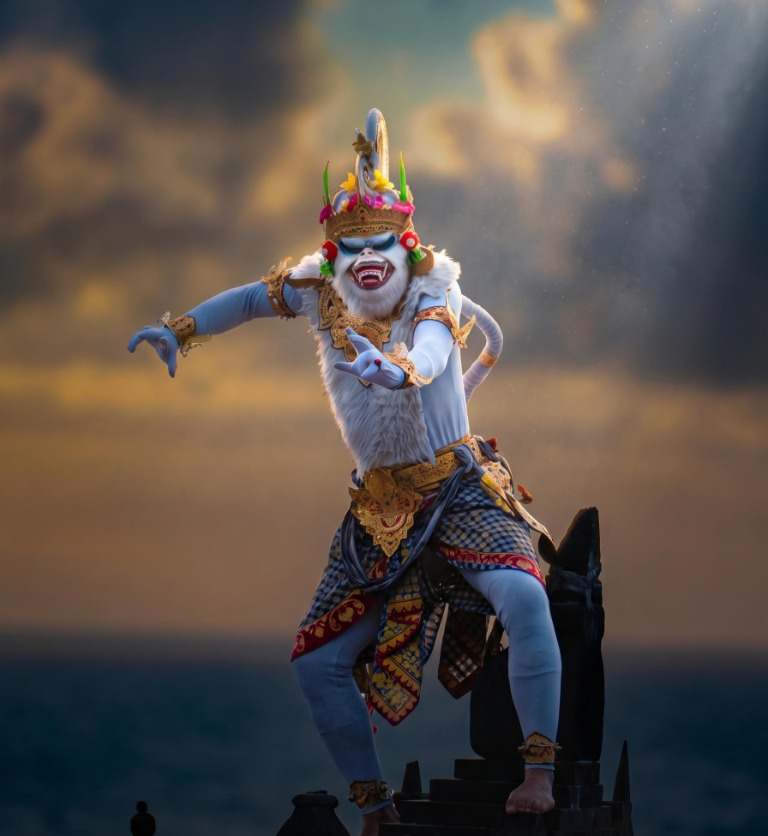

Jejak Sejarah
dan Filosofi Kecak
Di balik lingkaran penyuara dan gerak teatrikal Ramayana, tersimpan jejak ritus Sanghyang, perjumpaan lintas budaya, dan keyakinan pada suara manusia sebagai daya hidup bersama.
Gulir untuk membuka arsip

“Di malam sunyi tanpa gamelan, suara napas dan teriakan cak manusia melintasi batas nalar, memanggil dewa pelindung desa.”
SUARA YANG MENYATUKAN
WARISAN YANG TERUS HIDUP
LINGKARAN SAKRAL ULUWATU
NAPAS TANPA KONDUKTOR
TRADISI KECAK PECATU
SANGHYANG DEDARI
CAK-CAK-CAK
PURA LUHUR ULUWATU
Warisan dalam Catatan & Ingatan:
Lagu & Kidung Sanghyang
Dedari
Telusuri jejak warisan yang hidup dalam catatan, ingatan kolektif, dan suara: dari konteks ritus serta mekanisme trans, transkripsi sastra Kawi, hingga dokumentasi rekaman Sanghyang Dedari.
Laras Slendro Kuno
Kidung tanpa gamelan
01
Gianyar & Karangasem
Tahap awal · konteks sosio-religius
Asal-usul & Mekanisme Trans Sanghyang
Ketika sebuah desa di pedalaman Bali dilanda gering (wabah penyakit kasat mata mematikan), masyarakat menggelar ritus pembersihan spiritual sakral Sanghyang Dedari. Dua gadis kecil suci yang belum akil balig didudukkan di depan pedupaan kemenyan harum hingga kesadaran raga mereka terlepas (kerawuhan / trance transgresif) dan dirasuki bidadari kahyangan Dewi Supraba dan Dewi Tilottama.
02
Tembang anugerah Kawi
Tahap inti · sastra & mantra Kawi
Transkripsi Sastra Kawi Pelindung Semesta
“Kukus arum mancur mancur, maring kahyangan batara, turun dedari suci, ngiberang kasa petak...”
Terjemahan hermeneutis
Asap harum membumbung menuju tempat tinggi ke kahyangan para dewa, bidadari suci turun melayang membentangkan selendang putih tak bernoda pelindung semesta.
“Iling ling ira dewa, tumurun ring pasiraman, masiram toya ning tirtha, nganyudang sarwa lara...”
Terjemahan hermeneutis
Ingatlah seruan suci, turunnya dewata agung, turunlah ke pertirtaan suci, membersihkan dengan air tirtha serta menghanyutkan segenap perkara nestapa dan penyakit setempat.
03
Tahap puncak · dokumentasi lagu
Rekaman Kidung Sanghyang Dedari
Lagu & kidung
Kidung Sanghyang Dedari
Dengarkan simulasi laras Slendro Kuno yang dilantunkan tanpa iringan gamelan. Klik tombol putar untuk mengaktifkan gelombang synthesizer vokal.
Paduan SuaraRekaman Sanghyang Dedari--:--
Rekaman Kidung Sanghyang Dedari oleh PSM Udayana.
Dari ritus menuju
wiracarita Ramayana
Perjumpaan Walter Spies dan I Wayan Limbak pada awal 1930-an menjadi bagian penting dari perjalanan bentuk Kecak sebagai pertunjukan.
Sanghyang Dedari Tradisional
Ritus penolak bala yang pantang dipentaskan tanpa musibah kelaparan atau wabah.
- 01
Karakter Eksklusif & Tertutup
Hanya dipentaskan di pelataran Pura Desa saat malam gelap bulan mati (Tilem) ketika desa dalam krisis spiritual.
- 02
Subjek Trance Mutlak
Dua gadis kecil dalam kondisi disosiasi kesadaran penuh; tidak mengingat gerak tarian setelah sadar.
- 03
Nir-Alur Cerita (Non-Naratif)
Tidak mengusung plot drama, dialog tokoh sastra, atau penokohan wiracarita India/Jawa Kuno.
Warisan spiritualRuang upacara
Kecak Modern Wiracarita Ramayana
Bentuk teatrikal yang merangkai koor vokal dengan kisah Ramayana dan gerak para tokohnya.
- 01
Injeksi Epik Ramayana
Penyisipan lakon epik Sansekerta: Penculikan Dewi Sinta oleh Dasamuka, kesetiaan Burung Jatayu, dan pembakaran Alengka oleh Hanoman.
- 02
Struktur Paduan Suara 70-150 Pria
Paduan koor diorganisasi dalam sektor-sektor melingkar bertingkat dengan komando juru tembang (Dalang Pengelembar).
- 03
Tur Bersejarah Eropa 1931
I Wayan Limbak membawa kelompok Kecak Desa Bedulu melintasi samudra ke Exposition Coloniale Internationale di Paris.
Teater tari BaliSuara sebagai musik
Suara yang bergerak
melintasi waktu
Telusuri perubahan Kecak dari praktik ritual hingga menjadi warisan pertunjukan yang terus dipelajari dan diwariskan.
Ritus Sanghyang di Bali
Nyanyian dan keadaan trans menjadi bagian dari ritus komunal yang terkait dengan permohonan keselamatan dan keseimbangan.
Tradisi ritualSuara komunal
Inovasi kolaboratif Spies & Wayan Limbak
Walter Spies terpesona oleh poliritme koor Sanghyang dan bersama maestro I Wayan Limbak mengolah unsur vokal menjadi latar dinamis bagi wiracarita Ramayana.
Perkembangan bentukKoor Kecak
Suara menjadi panggung
Pola vokal, tokoh, gerak tari, dan kisah Ramayana berpadu menjadi sebuah pertunjukan yang dapat dinikmati sekaligus menyampaikan nilai budaya.
Kisah dan gerakTeater tari
Migrasi ke tebing karang
Para tetua adat Pecatu dan seniman tari membawa dramaturgi Kecak ke amfiteater tebing Pura Luhur Uluwatu, memadukan suasana senja dengan deburan Samudra Hindia.
Panggung alamUluwatu
Tradisi diteruskan bersama
Kecak terus hadir melalui latihan, pertunjukan, dan pewarisan pengetahuan kepada generasi baru dengan menjaga penghormatan pada konteks budayanya.
Belajar lintas generasiWarisan Bali
Mengapa tanpa
gamelan perunggu?
Peniadaan instrumen bilah gong dan perunggu bukan merupakan kekurangan teknis, melainkan pilihan filosofis adiluhung untuk merayakan anatomi manusia sebagai mikrokosmos semesta.
Napas & Diafragma (Sabda Bayu)
Dalam ajaran Tri Pramana Hindu Bali, suara manusia (Sabda) dan hembusan napas daya hidup (Bayu) adalah instrumen paling murni yang langsung beresonansi dengan sang pencipta tanpa perantara logam tambang.
Suara manusiaAkustik alami
Perbedaan menjaga harmoni
Pola-pola suara yang bertaut menciptakan irama berlapis; tiap penyuara memberi bagian kecil pada denyut bersama.
InterlockingKotekan vokal
Irama lahir dari komunitas
Tak ada satu instrumen yang berdiri sendiri. Suara menjadi kuat ketika setiap orang mendengar dan merespons satu sama lain.
KeselarasanRwa Bhineda
Tidak ada instrumen yang disentuh, namun gelombang ritmis “cak-cak” terpecah menjadi pola-pola saling mengunci—musik yang dibangun bersama oleh napas manusia.
Catatan Saksi Mata &
Ikonografi Wiracarita
Koleksi arsip etnomusikologi · 1938

Ikon teatrikal Ramayana
Dokumentasi visual
Hanoman: Satria Wanara Putih
Gelungan prada emas dan busana putih merepresentasikan keberanian, kesetiaan, serta semangat menentang angkara murka dalam kisah Alengka.
Karakteristik Ksatria suci
Koreografi Gerak kera akrobatik
Colin McPhee · A House in Bali (1938)
Monograf pertama
“Tidak ada instrumen yang disentuh, namun gelombang ritmis cak-cak yang terpecah menjadi interlocking lima pola saling mengunci mampu mengguncang tanah, melebihi kekuatan orkestra simfoni Eropa tertua.”
Piringan hitam Odeon & Beka Record (1931)
78 RPM · Shellac
Rekaman piringan hitam shellac bersejarah yang diinisiasi oleh Beka Record merekam 14 menit vokal murni Sanghyang dan sahutan poliritmik Bedulu. Menjadi bukti arkeologi sonik tertua kepindahan tradisi ritus desa ke panggung internasional.
Nomor katalogOdeon A-27801
Arsip BerlinPhonogramm-Archiv
Arsip AmsterdamTropenmuseum
“Kecak adalah cerita tentang manusia yang mendengar, bernapas, dan bergerak sebagai satu lingkaran.”
Kembali ke beranda